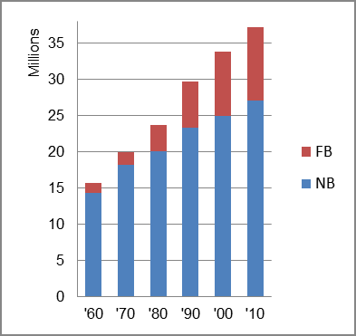

The foreign-born (FB) population increased from 1,343,710 in 1960 to 10,150,429 in 2010. That was an increase of 655.4 percent. The foreign-born share changed from 8.5 percent to 27.2 percent.
The share of the overall population that was native-born (NB) increased by 88.6 percent.
California: Population 1960-2010 
The first chart below shows the three population change factors for three periods adjusted for annual average amounts. All the population increase in each of the three periods is due to either natural change (B-D) or immigration (NIM) as there was a population loss - net outflow - from domestic migration (NDM). Natural change (B-D) was the primary factor in population increase for each of the three periods.
The second chart shows the same data but with an adjustment to reflect births to immigrants shifted to NIM. In it, NIM replaced B-D as the primary factor in population increase.
California: Sources of Population Change 1990-2013 California: Sources of Population Change (Adjusted) 1990-2013
B-D NDM NIM B-D NDM NIM 90-'99 58.3% neg. 41.7% 90-'99 24.0% neg. 76.0% 00-'09 61.3% neg. 38.7% 00-'09 17.8% neg. 82.2% 10-'13 68.5% neg. 31.5% 10-'13 14.5% neg. 85.5%